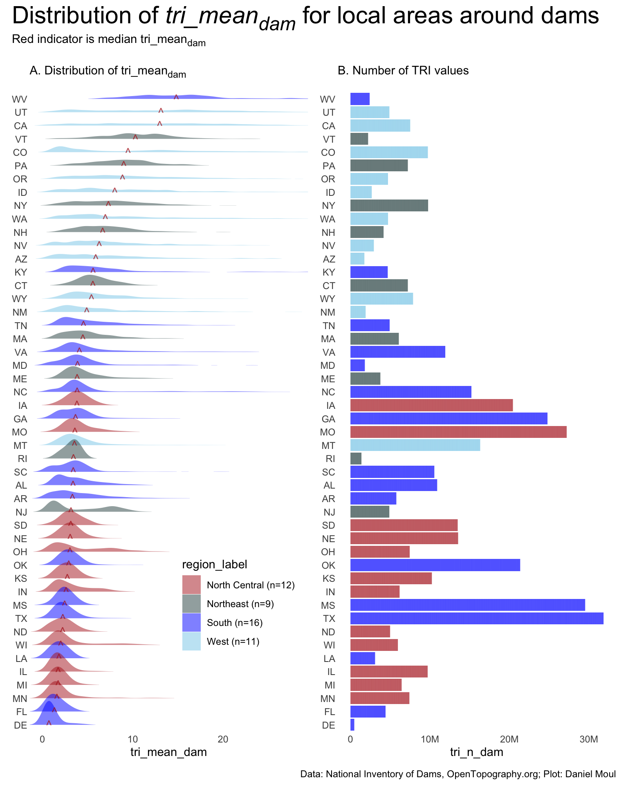
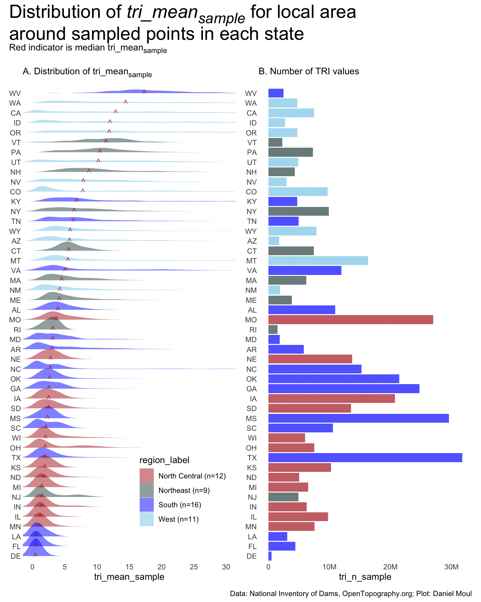
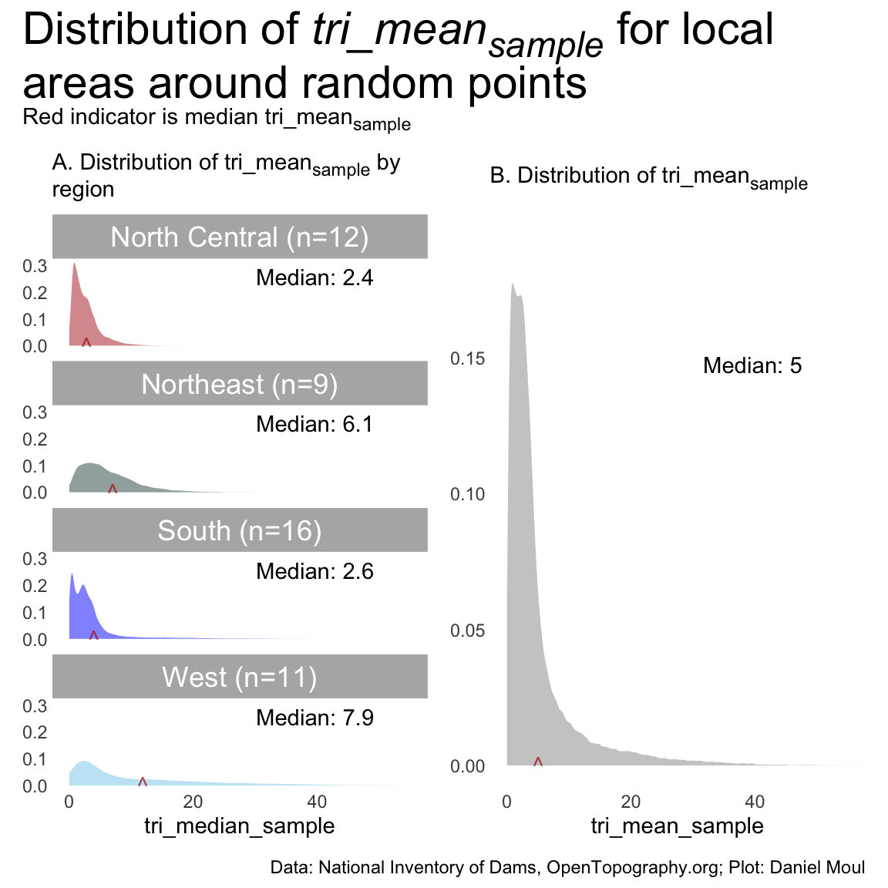
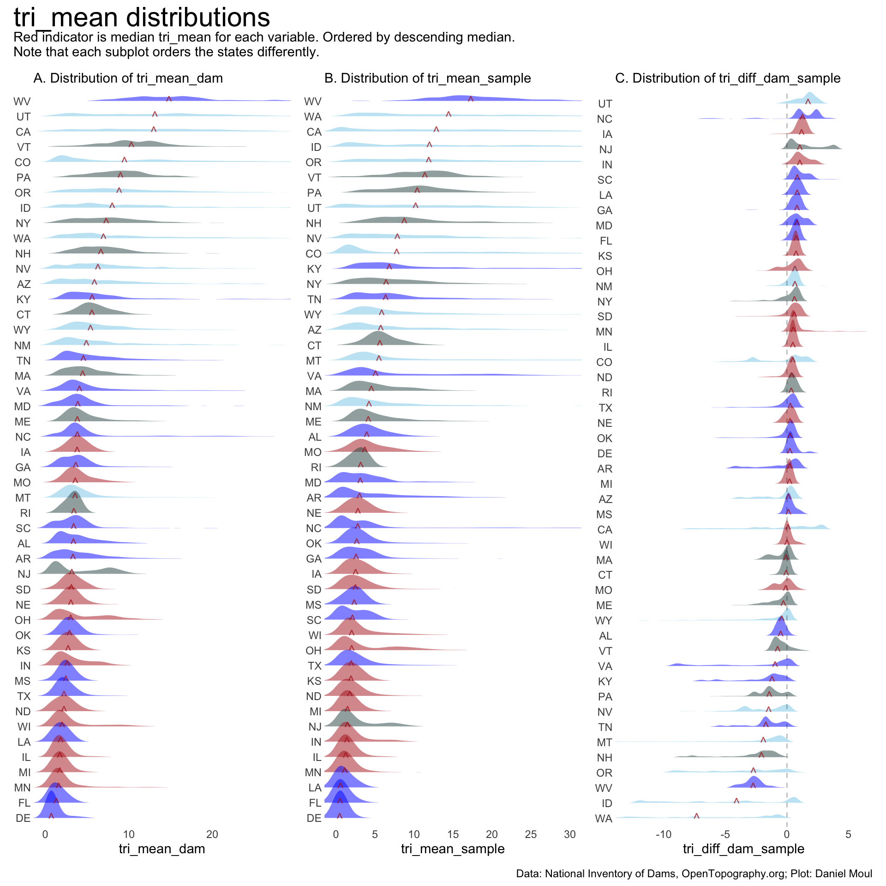
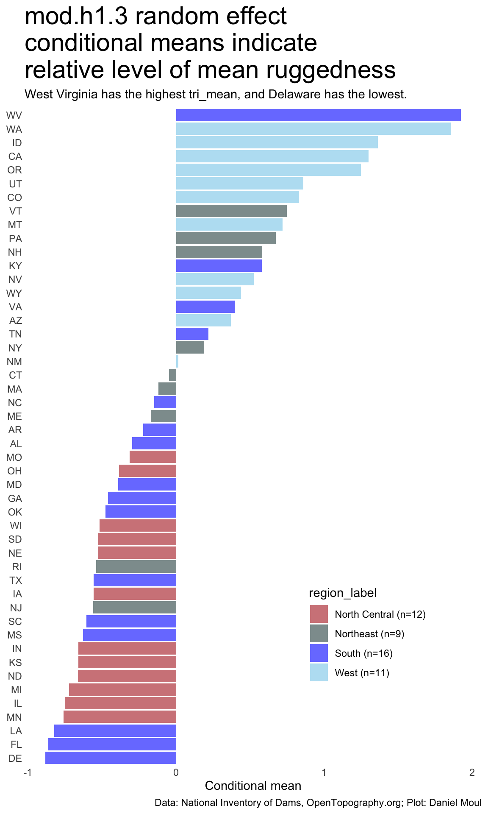
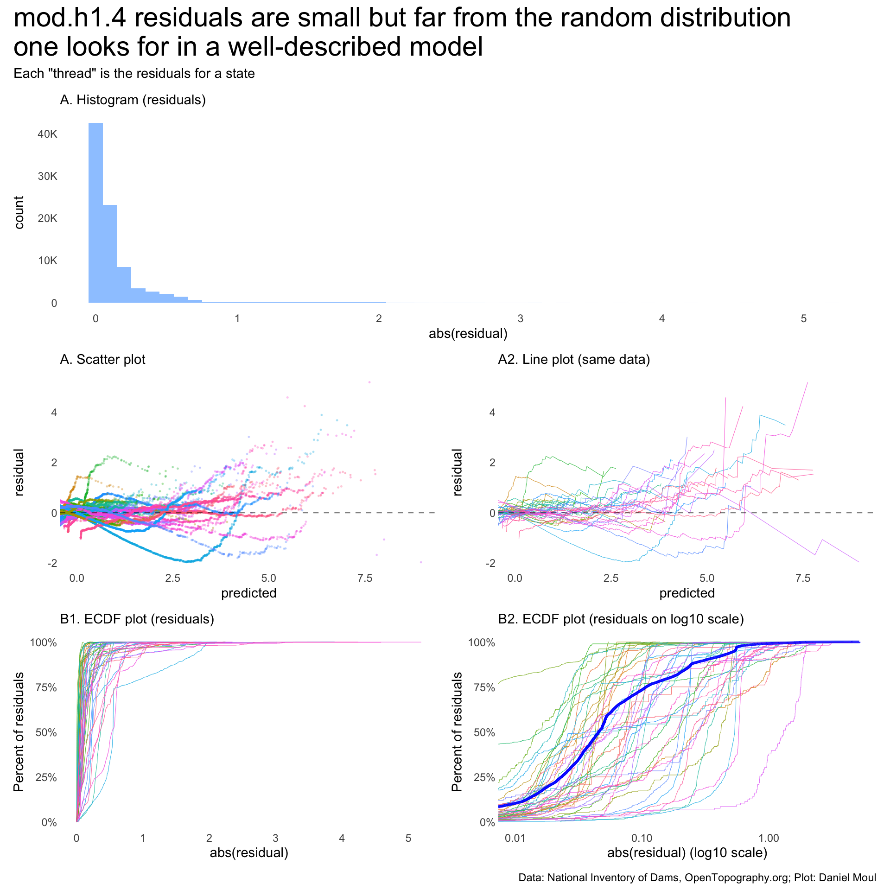
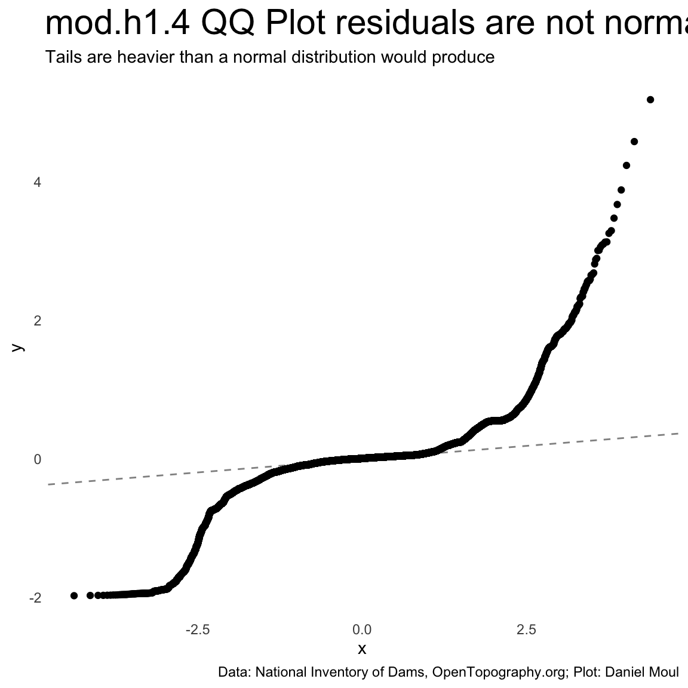

state_boundaries_sf <-us_states() |># `dams` data uses `state_abb` rather than 'state_abbr`, which `dam` gets from R's built-in `state.abb` data frame.# next 3 lines are a workaround since "rename(state_abb = state_abbr)" doesn't work# "Error in rename.sf(us_states(), state_abb = state_abbr) : internal error: can't find `agr` columns"mutate(state_abb = state_abbr) |>relocate(state_abb, .after = state_abbr) |>select(-state_abbr) |>filter(!state_abb %in%c("DC", "HI", "AK", "PR")) |>arrange(state_abb) |>st_transform("NAD83") # US Government standard CRSnc_boundary <- state_boundaries_sf |>filter(state_abb =="NC")
Show the code
###### Does dam TRI data exist?states_with_dams <-sort(unique(dams$state_abb))for(i inseq_len(length(states_with_dams))) { state_dam_tri_summary_fname <-paste0(state_dam_tri_summary_pname, "/", states_with_dams[i], ".rds")if(!file.exists(state_dam_tri_summary_fname)) {errorCondition(glue("This chapter ('ruggedness.qmd') needs dam terrain ruggedness (TRI) data created in the 'Exploring ruggedness' chapter.", "\nRerender this chapter after rendering that chapter (from a terminal command line: 'quarto render ruggedness-exploring.qmd')","\nAfter doing that files will exist for each continental state similar to\n{state_dam_tri_summary_fname}" ) ) knitr::knit_exit() }}###### Does state sample TRI data exist?states_with_points <- states_with_damsfor(i inseq_len(length(states_with_points))) { state_tri_circle_samples_fname <-paste0(state_tri_circle_samples_pname, "/", states_with_points[i], ".rds")if(!file.exists(state_tri_circle_samples_fname)) {errorCondition(glue("This chapter ('ruggedness.qmd') needs state sample terrain ruggedness (TRI) data created in the 'Exploring ruggedness' chapter.", "\nRerender this chapter after rendering that chapter (from a terminal command line: 'quarto render ruggedness-exploring.qmd').","\nAfter doing that files will exist for each continental state similar to\n{state_tri_circle_samples_fname}","\nThen you can rerender 'ruggedness.qmd' from a terminal command line: 'quarto render' or 'quarto rend ruggedness.qmd')." ) ) knitr::knit_exit() }}
After thinking about the question I asked in Section 6.4 Ratios and how I might answer it:
Dams built in hilly areas seem to me to be more likely to have low ratios of surfaceArea to nidStorage, i.e., the dams are likely to be deeper rather than broader. Can we substantiate or disprove this conjecture?
I’ve thought of three more specific hypotheses I want to explore (\(H_2\) and \(H_3\) are variants addressing the original question).
10.1.1 Hypothesis 1
Local terrain ruggedness in the area around dams is greater than the ruggedness of areas around randomly sampled points in the continental US states.
In other words, for states:
\[tri\_mean_{dam} \gt tri\_mean_{sample}\] In addition to plots exploring distributions and relationships, I look at four regressions:
mod.h1.1: lm(tri_mean_dam ~ tri_mean_sample)
If \(H_1\) is true, the regression term estimate for \(tri\_mean_{sample}\) will be positive. this is a necessary but not sufficient condition for \(H_1\).
mod.h1.2: lmer(tri_mean_dam ~ (1 | state))
How much variation in \(tri\_mean_{dam}\) can be explained by state effects without consideration of \(tri\_mean_{sample}\)? This provides a base from which to consider other models.
mod.h1.3: lmer(tri_mean_sample ~ (1 | state))
How much variation in \(tri\_mean_{sample}\) can be explained by state effects without consideration of \(tri\_mean_{dam}\)? This provides a base from which to consider other models.
I assume this model explains the more of the variance than the others.
10.1.2 Hypothesis 2
In states with higher terrain ruggedness, dams’ \(\frac{surfaceArea}{nidStorage}\) will be lower.
Where dams are in more rugged states, it seems likely dams’ lakes will be deeper and thus have smaller ratios \(\frac{surfaceArea}{nidStorage}\). In other words, considering the states in the continental US, there is an inverse proportional relationship:
In addition to plots exploring distributions and relationships, I look at two regressions:
lm(tri_mean_sample ~ ratio)
lmer(tri_mean_sample ~ ratio + (1 | state))
where \(ratio = \frac{surfaceArea}{nidStorage}\).
10.1.3 Hypothesis 3
Compared to H2 there is a stronger inverse proportional relationship between ruggeness in the local areas around dams and surfaceArea::nidStorage
In \(H_3\) I restrict the locations to the local areas around dams. It’s likely there is a stronger inverse proportional relationship between \(tri\_mean_{dam}\) and \(\frac{surfaceArea}{nidStorage}\) for the same dam, since dams are built where the topography provides good places to hold water.1
In addition to plots exploring distributions and relationships, I look at two regressions:
lm(tri_mean_dam ~ ratio)
lmer(tri_mean_dam ~ ratio + (1 | state))
10.2 Methodology
10.2.1 Key metric
I calculate terrain ruggedness index (TRI) from digital elevation model (DEM) data I downloaded and saved in GeoTIFF files. The terra::terrain() function calculates TRI for me from the elevation data using eight-neighbor “classic” TRI per Wilson et al. (2007).2
From the terra::terrain() help:
“TRI (Terrain Ruggedness Index) is the mean of the absolute differences between the value of a cell and its 8 surrounding cells.”
Note that TRI values are sensitive to the resolution of the digital elevation model, since differences in elevation differ significantly over various distances.
10.2.2 Data sources
I get elevation data from elevatr::get_elev_raster(), which returns Shuttle Radar Topography Mission (SRTM)3 data via Open Topography. The SRTM’s Digital Elevation Model (DEM) is a Digital Surface Model (DSM) rather than a Digital Terrain Model (DTM). In other words, the radar reflections used to calculate elevations in some cases are from the tops of buildings and partway through the tree canopy; elevation values have not been adjusted to estimate ground level.4 For my purposes, and because I have so many points to work with, this noise is not an issue.
The SRTM digital elevation model (DEM) has a range over continental North America south of 60° N latitude. This range is fine, since the northernmost point in the continental USA is the Northwest Angle Inlet in Lake of the Woods, MN at 49.4°).5
I use zoom level 9 (elevatr::get_elev_raster(z = 9)), which provides data at the resolution of about 125 m per point in North Carolina and greater distances between points in lower latitudes. For more information see Section 11.1.4.1 Resolution of elevation data varies by latitude.
For drawing the Blue Ridge Parkway in North Carolina, I use shapes from OpenStreetMap, which I acquire via the osmdata package.
10.2.3 Data prep
Dam data: Using data the from the National Inventory of Dams, I prepare a data set with 86351 dams that include nidHeightId (and thus nidHeight) along with state abbreviation (state_abb) and \((longitude, latitude)\) location.
State boundaries, etc.: I use USAboundaries::us_states() to get state boundaries and use osmdata::opq() to download OpenStreetMap shapes for the Blue Ridge Parkway in North Carolina.
State-level elevation data: Using state boundaries, I downloaded DEM and saved them as GeoTIFF files for use in the following steps.
Local terrain ruggedness around dams: I define a circle of radius r = 5 km around each dam location, get the elevations for every point in the circle, and calculate the TRI for the points. Then I create summary statistics for each dam’s circle (tri_mean_dam, tri_median_dam, tri_sd_dam, tri_n_dam points).
Local terrain ruggedness around random points: The number of dams vary by state. So for each state, I randomly sample the same number of points as there are dams in that state, define circles of radius r = 5 km, get the elevations for every point in the circle, and calculate the TRI for the points. Then I create summary statistics for each sample’s circle (tri_mean_sample, tri_median_sample, tri_sd_sample, tri_n_sample points).
For more information about data preparation, questions I asked, and trade-offs I made along the way, see Chapter 11 Preparing terrain ruggedness.
I plot the distribution of \(tri\_mean_{dam}\) and \(tri\_mean_{sample}\) by state_abb, state_region, and nidHeightId.
I sort the dam and state samples in order of \(tri\_mean_{dam}\) and \(tri\_mean_{sample}\) respectively, and I pair them in linear regressions with various models to check which models explain the most variance. I plot some of the model parameter (a.k.a. term) estimates.
I plot the distributions of \(surfaceArea\), \(nidStorage\), and \(\frac{surfaceArea}{nidStorage}\) aggregated by state_abb and nidHeigthId.
I sort the dam and state samples in order of \(tri\_mean_{dam}\) and \(tri\_mean_{sample}\) respectively, and I pair them in linear regressions predicting \(tri\_mean_{sample}\) using various models to check which models explain the most variance.
I plot the distributions of \(surfaceArea\), \(nidStorage\), and \(\frac{surfaceArea}{nidStorage}\) aggregated by state_abb and nidHeigthId.
I use the same data set as in \(H_2\) and run linear regressions predicting \(tri\_mean_{dam}\) using various models to check which models explain the most variance.
10.3 Exploring H1 : Local terrain ruggedness in the area around dams is greater than the ruggedness of areas around randomly sampled points in the contentinental US states
The area around a dam has greater terrain ruggedness than its paired state sample if
\[tri\_mean_{dam} - tri\_mean_{sample} > 0\]
When the differences in \(tri\_mean_{dam}\) and \(tri\_mean_{sample}\) are aggregated by state, region, or other property, their distributions and differences in distribution medians allow us to make some generalizations:
There is a lot of variation in the distributions and median tri_means of \(tri\_mean_{dam}\) and \(tri\_mean_{sample}\) by state. And I didn’t expect West Virginia to have the highest median \(tri\_mean_{sample}\).
While there are states that have high median \(tri\_mean_{dam}\) for the local areas around some dams, there is no concentration in the distributions at these higher values. Ruggedness varies a lot more than flatness.
There is wide variation in number of points in each state, proportional to the number of dams in the state. DE has the fewest points: 471,661, which is more than enough for my purposes.
Show the code
dta_for_plot <- state_dam_tri_summary_df |>mutate(state_mean_dam =weighted.mean(tri_mean_dam, w = tri_n_dam),state_median_dam =median(tri_mean_dam),.by =c(state_abb, state_region, region_label)) |>mutate(state_abb =fct_reorder(state_abb, state_median_dam))p1_dam_state <- dta_for_plot |>ggplot() +geom_density_ridges(aes(tri_mean_dam, state_abb, fill = region_label),rel_min_height =0.005,linewidth =0.1,color =NA,alpha =0.5 ) +geom_text(data = state_dam_tri_summary_df |>mutate(state_mean_dam =weighted.mean(tri_mean_dam, w = tri_n_dam),state_median_dam =median(tri_mean_dam),.by = state_abb ) |>distinct(state_abb, state_median_dam),aes(state_median_dam, state_abb, label ="^"),size =4,alpha =0.75,color ="firebrick" ) +scale_fill_manual(values =c("firebrick", "darkslategrey", "blue", "skyblue")) +guides(fill =guide_legend(position ="inside")) +theme(legend.position.inside =c(0.75, 0.2)) +coord_cartesian(xlim =c(0, 28)) +labs(subtitle ="A. Distribution of tri_mean<sub>dam</sub><br>",y =NULL )p2 <- dta_for_plot |>ggplot() +geom_col(aes(tri_n_dam, state_abb, fill = region_label),linewidth =0.1,color =NA,alpha =0.5 ) +scale_x_continuous(labels =label_number(scale_cut =cut_short_scale())) +scale_fill_manual(values =c("firebrick", "darkslategrey", "blue", "skyblue")) +guides(fill ="none") +labs(subtitle ="B. Number of TRI values<br>",y =NULL )p1_dam_state + p2 +plot_annotation(title ="Distribution of *tri_mean<sub>dam</sub>* for local areas around dams",subtitle ="Red indicator is median tri_mean<sub>dam</sub><br>",caption = my_caption_nid_opentopography ) &theme(plot.title =element_textbox_simple(),plot.subtitle =element_textbox_simple())

Figure 10.1: Distributions of tri_meandam in areas around dams in each state
States with large flat areas as well as mountains have a distribution with a mode in low TRI values and a long tail. See for example, CO, NC, OH, TX (panel A).
Show the code
dta_for_plot <- state_samples_tri_summary_df |>mutate(state_mean_sample =weighted.mean(tri_mean_sample, w = tri_n_sample),state_median_sample =median(tri_mean_sample),.by = state_abb) |>mutate(state_abb =fct_reorder(state_abb, state_median_sample))dta_for_plot2 <- dta_for_plot |>mutate(region_mean_sample =weighted.mean(tri_mean_sample, w = tri_n_sample),region_median_sample =median(tri_mean_sample),.by = region_label) #|># FYI: need to adjust factors to match regions in panel A if I use the fct_reorder() line below# mutate(region_label = fct_reorder(region_label, region_mean)) dta_for_plot2_region_medians <- dta_for_plot2 |>distinct(region_median_sample, .keep_all =TRUE)p1_sample_state <- dta_for_plot |>ggplot() +geom_density_ridges(aes(tri_mean_sample, state_abb, fill = region_label),rel_min_height =0.005,linewidth =0.1,color =NA,alpha =0.5 ) +geom_text(data = state_samples_tri_summary_df |>mutate(state_mean_sample =weighted.mean(tri_mean_sample, w = tri_n_sample),state_median_sample =median(tri_mean_sample),.by = state_abb ) |>distinct(state_abb, state_median_sample),aes(state_median_sample, state_abb, label ="^"),size =4,alpha =0.75,color ="firebrick" ) +scale_x_continuous(breaks =0:10*5) +scale_fill_manual(values =c("firebrick", "darkslategrey", "blue", "skyblue")) +guides(fill =guide_legend(position ="inside")) +theme(legend.position.inside =c(0.75, 0.15)) +coord_cartesian(xlim =c(0, 30)) +labs(subtitle ="A. Distribution of tri_mean<sub>sample</sub><br>",y =NULL )p2 <- dta_for_plot |>ggplot() +geom_col(aes(tri_n_sample, state_abb, fill = region_label),linewidth =0.1,color =NA,alpha =0.5 ) +scale_x_continuous(labels =label_number(scale_cut =cut_short_scale())) +scale_fill_manual(values =c("firebrick", "darkslategrey", "blue", "skyblue")) +guides(fill ="none") +labs(subtitle ="B. Number of TRI values<br>",y =NULL )p1_sample_state + p2 +plot_annotation(title ="Distribution of *tri_mean<sub>sample</sub>* for local area<br>around sampled points in each state",subtitle ="Red indicator is median tri_mean<sub>sample</sub><br>",caption = my_caption_nid_opentopography ) &theme(plot.title =element_textbox_simple(),plot.subtitle =element_textbox_simple())

Figure 10.3: Distribution of tri_meansample for areas around randomly sampled points in each state
Of note re: fig-state-local-area-tri-summary-density-non-state:
Similar to Figure 10.2, there is more variation in \(tri\_mean_{sample}\) in the Northeast and West, which have higher median \(tri\_mean_{sample}\) than the North Central and South regions (panel A).
North Central looks by eye to be the region with a distribution of \(tri\_mean_{sample}\) closest to the overall distribution (panel B), however Northeast region has the closest median \(tri\_mean_{sample}\).
Show the code
dta_for_plot <- state_samples_tri_summary_df |>mutate(region_mean_sample =weighted.mean(tri_mean_sample, w = tri_n_sample),region_median_sample =median(tri_mean_sample),.by =c(region_label))dta_for_plot_p1_region_medians <- dta_for_plot |>distinct(region_label, .keep_all =TRUE)p1_sample_region <- dta_for_plot |>ggplot() +geom_density(aes(tri_median_sample, fill = region_label),linewidth =0.1,color =NA,alpha =0.5 ) +geom_text(data = dta_for_plot_p1_region_medians,aes(region_mean_sample, 0, label ="^"),size =4,alpha =0.75,color ="firebrick" ) +geom_text(data = dta_for_plot_p1_region_medians,aes(x=I(0.7), y =I(0.8), label =glue("Median: {round(region_median_sample, digits = 1)}") ) ) +scale_fill_manual(values =c("firebrick", "darkslategrey", "blue", "skyblue")) +guides(fill ="none") +facet_wrap(~region_label, ncol =1) +coord_cartesian(xlim =c(0, 55)) +labs(subtitle ="A. Distribution of tri_mean<sub>sample</sub> by region<br>",y =NULL )dta_for_plot_p1_overall_median <- dta_for_plot |>summarize(overall_tri_median_sample =mean(tri_mean_sample))p2_sample_overall <- dta_for_plot |>ggplot() +geom_density(aes(tri_mean_sample),linewidth =0.1,fill ="grey80",color =NA,# alpha = 0.3 ) +geom_text(data = dta_for_plot_p1_overall_median,aes(overall_tri_median_sample, 0, label ="^"),size =4,alpha =0.75,color ="firebrick" ) +geom_text(data = dta_for_plot_p1_overall_median,aes(x=I(0.7), y =I(0.8), label =glue("Median: {round(overall_tri_median_sample, digits = 1)}") ) ) +# facet_wrap(~nidHeightId, ncol = 1) +coord_cartesian(xlim =c(0, 55)) +labs(subtitle ="B. Distribution of tri_mean<sub>sample</sub><br>",y =NULL )p1_sample_region + p2_sample_overall +plot_annotation(title ="Distribution of *tri_mean<sub>sample</sub>* for local areas around random points",subtitle ="Red indicator is median tri_mean<sub>sample</sub><br>",caption = my_caption_nid_opentopography ) &theme(plot.title =element_textbox_simple(),plot.subtitle =element_textbox_simple())

Figure 10.4: Distribution of tri_meansample for areas around randomly sampled points in each state
10.3.2 Second: difference in tri_meandam - tri_meansample
Show the code
tri_dam_tmp <- dams_with_tri |>st_drop_geometry() |>select(nidId, state_abb, nidHeight, nidHeightId, nidStorage, surfaceArea, starts_with("tri_")) |>arrange(state_abb, tri_mean_dam)n_tri_dam_tmp <- tri_dam_tmp |>count(state_abb, name ="n_dams")tri_sample_tmp <- state_samples_tri_summary_dfcheck_n <-left_join( dams_with_tri |>st_drop_geometry() |>count(state_abb, name ="n_dam"), state_dam_tri_summary_df |>count(state_abb, name ="n_sample"),by ="state_abb") |>mutate(n_diff = n_sample - n_dam )# Need n_diff to be zero for all states to pair tri_mean_dam and tri_mean_sample in dta_for_modelif(sum(check_n$n_diff) !=0) {# We have some work to do tri_sample_tmp2 <- tri_sample_tmp |>left_join(check_n,by ="state_abb")if(any(check_n$n_diff) <0) {stop("Code block define-tri-diff-model-data: at least one state has fewer rows of sample points than dams. Fix this manually.") } tri_sample_tmp3 <- tri_sample_tmp2 |>mutate(test_n_sample = n_sample - n_diff,test_tri_mean_sample =if_else(row_number() <= n_diff,NA_real_, tri_mean_sample),.by = state_abb ) |>filter(!is.na(test_tri_mean_sample)) |>mutate(#test_tri_n_sample = test_tri_mean_sample,n_diff2 = test_n_sample - n_dam ) |>select(-starts_with("test")) |># TODO: solve the following kludge at source and remove this filterfilter(!(state_abb =="TX"&row_number() <=3) &!(state_abb =="VT"&row_number() ==1) &!(state_abb =="WV"&row_number() ==1),.by = state_abb) n_tri_sample_tmp3 <- tri_sample_tmp3 |>count(state_abb, name ="tri_sample_n2") tri_check_tmp <-inner_join( n_tri_sample_tmp3, n_tri_dam_tmp,by =join_by(state_abb) ) |>mutate(dif = tri_sample_n2 - n_dams) |>arrange(desc(dif)) state_abb_levels <- tri_dam_tmp |>mutate(mean_tri_mean_dam =mean(tri_mean_dam),.by = state_abb ) |>arrange(mean_tri_mean_dam) |>distinct(state_abb, mean_tri_mean_dam) |>mutate(state_abb =as_factor(state_abb)) # keeps current order} else {# no adjustments needed state_tri_tmp3 <- tri_dam_tmp #}dta_for_model <-bind_cols( tri_sample_tmp3 |>group_by(state_abb) |>arrange(tri_mean_sample,.by_group =TRUE) |>ungroup(), tri_dam_tmp |>group_by(state_abb) |>arrange(tri_mean_dam,.by_group =TRUE) |>ungroup() |>select(-state_abb) # already in state_tri_tmp ) |>mutate(tri_diff_dam_sample = tri_mean_dam - tri_mean_sample,area_to_volume_dam = surfaceArea / nidStorage,state_abb =factor(state_abb, levels = state_abb_levels$state_abb) ) |>filter(nidId !="NM00039", # surfaceArea seems to be an error (or very major outlier) nidId !="MI00650") # Lake Superior adjustments as noted in an earlier chaptern_dams_by_nidHeightId <- dta_for_model |>count(nidHeightId) |>mutate(supports_h1 = nidHeightId %in%c("Less than 25 feet", "25-50 feet") )n_dams_support_h1 <-sum(n_dams_by_nidHeightId[n_dams_by_nidHeightId$supports_h1, ]$n)pct_dams_support_h1 <- n_dams_support_h1 /sum(n_dams_by_nidHeightId$n)states_support_h1 <- dta_for_model |>mutate(supports_h1 = tri_mean_dam > tri_mean_sample ) |>reframe(n_dams_state =n(),n_dams_state_support_h1 =sum(supports_h1),.by = state_abb ) |>mutate(pct_dams_in_state_support_h1 = n_dams_state_support_h1 / n_dams_state )n_states_support_h1 <- states_support_h1 |>filter(pct_dams_in_state_support_h1 >0.5) |>nrow()
Aggregations in which \(median({tri\_mean_{dam} - tri\_mean_{sample}}) > 0\) have a higher terrain ruggedness than the state in general. The panels in Figure 10.5 reveal the following:
Panel A: there is a lot of variation in the distributions by state.
30 of 48 states (62%) have positive \({median(tri\_mean_{dam} - tri\_mean_{sample})} > 0\), supporting \(H_1\).
in flatter states \(H_1\) holds true. In mountainous states it does not.
Panel B: the median for all dams and samples is slightly positive, supporting \(H_1\).
Panel C: North Central and South regions have a (mildly) positive median. These, the flattest regions, support \(H_1\).
Panel D:nidHeightId categories < 50 ft have positive means, which includes most dams
Figure 10.5: Distribution of dam tri_meandam and tri_meanstate sample by state
Of note re: fig-three-tri-mean-distributions-by-date:
This plot of distributions is a recap of earlier plots. I place them next to each other for easy comparison.
Where the distribution of \(tri\_mean_{dam}\) (panel A) differs from \(tri\_mean_{sample}\) (panel B), it tells us the ruggedness around dams is not representative of the state. For example, Colorado doesn’t seem to have many dams in the flat, eastern part of the state–or the dams in the eastern part are in relatively rare hilly areas. I also note that more distributions in panel B seem to have long tails of high \(tri\_mean_{sample}\) values.
Panel C is ordered by the size of the difference \(tri\_mean_{dam} - tri\_mean_{sample}\) for each state (a different ordering than panel A or B). States with a positive difference support \(H_1\); those near zero or negative challenge it.
Show the code
(p1_dam_state +labs(subtitle ="A. Distribution of tri_mean_dam")) + (p1_sample_state +labs(subtitle ="B. Distribution of tri_mean_sample")) + (p1_diff_dam_sample +labs(subtitle ="C. Distribution of tri_diff_dam_sample")) +plot_annotation(title ="tri_mean distributions",subtitle =glue("Red indicator is median tri_mean for each variable. Ordered by descending median.","\nNote that each subplot orders the states differently."),caption = my_caption_nid_opentopography ) &theme(plot.title =element_textbox_simple()) &guides(fill ="none")

Figure 10.6: Distribution of TRI means in each state
Plots in panels A1 and B1 appear to show that \(tri\_mean_{sample}\) exceeds \(tri\_mean_{dam}\) in most cases, which would disprove \(H_1\).
However, panels A1 and B1 hide most of the data, which have low \(tri\_mean\) values. The log-log plots in panels A2 and B2 show that in most cases, \(tri\_mean_{dam}\) exceeds \(tri\_mean_{sample}\).
In other words, in flatter areas \(H_1\) holds true. In mountainous areas it does not.
Figure 10.7: Distribution of TRI means in each state
10.3.3 Regression models
I ordered \(tri\_mean_{dam}\) and \(tri\_mean_{sample}\) from smallest to largest in each state before combining them in dta_for_model. The data set includes 85,854 pairs in 48 states. DE has the least dams: 83. TX has the most dams: 7276.
Thus, when model mod.h1.1 \(tri\_mean_{dam} \sim \beta_1 tri\_mean_{sample} + \epsilon\) has \(\beta_1 > 1.0\) , it would that \(tri\_mean_{dam}\) in general is larger than \(tri\_mean_{sample}\) , which would consistent with the conclusions from Figure 10.5 in the prior section in supporting \(H_1\).
10.3.3.1 Model mod.h1.1
mod.h1.1 explains most of the variation: \(R^2 = 0.87\).
Call:
lm(formula = tri_mean_dam ~ tri_mean_sample, data = dta_for_model)
Residuals:
Min 1Q Median 3Q Max
-12.3141 -0.4044 -0.1503 0.4948 20.5014
Coefficients:
Estimate Std. Error t value Pr(>|t|)
(Intercept) 1.2566466 0.0071688 175.3 <2e-16 ***
tri_mean_sample 0.6809898 0.0008868 768.0 <2e-16 ***
---
Signif. codes: 0 '***' 0.001 '**' 0.01 '*' 0.05 '.' 0.1 ' ' 1
Residual standard error: 1.641 on 85852 degrees of freedom
Multiple R-squared: 0.8729, Adjusted R-squared: 0.8729
F-statistic: 5.898e+05 on 1 and 85852 DF, p-value: < 2.2e-16
\(\beta_1\) in \(\beta_1 tri\_mean_{dam}\) is 0.68, meaning \(tri\_mean_{dam}\) is on average 68% the size of \(tri\_mean_{sample}\), apparently disproving \(H_1\).
Note there is an implicit \(\left\{\beta_1,..\beta_n\right\}\) before each term \(\left\{term_1,..term_n\right\}\) in the regression formulas (and \(+ \epsilon\)) at the end. For the sake of brevity and readability, I omit them from the formulas in the remainder of this chapter.
10.3.3.2 Model mod.h1.2
mod.h1.2 explains more than a third of the variance using only state means: \(R^2 = 0.43\). This is a base model useful when considering the variance explained by other models.
Linear mixed model fit by REML ['lmerMod']
Formula: tri_mean_dam_scaled ~ 1 | state_abb
Data: mutate(dta_for_model, tri_mean_dam_scaled = scale(tri_mean_dam))
REML criterion at convergence: 207681.1
Scaled residuals:
Min 1Q Median 3Q Max
-3.5983 -0.4175 -0.1013 0.2144 14.4448
Random effects:
Groups Name Variance Std.Dev.
state_abb (Intercept) 0.5590 0.7477
Residual 0.6552 0.8095
Number of obs: 85854, groups: state_abb, 48
Fixed effects:
Estimate Std. Error t value
(Intercept) 0.2026 0.1080 1.876
Show the code
r_squared <-rsq(mod.h1.2)rsq_comment <-glue("r_squared: {round(r_squared$model, digits = 3)}", "\nconsisting of fixed effects: {round(r_squared$fixed, digits = 3)}", " and random effects: {round(r_squared$random, digits = 3)}" )
For this model, which includes only intercepts for each state: r_squared: 0.395 consisting of fixed effects: -0.041 and random effects: 0.436.
10.3.3.3 Model mod.h1.3
mod.h1.3 explains more than a third of the variance using only state means: \(R^2 = 0.39\). This is a base model useful when considering the variance explained by other models.
Linear mixed model fit by REML ['lmerMod']
Formula: tri_mean_sample_scaled ~ 1 | state_abb
Data:
mutate(dta_for_model, tri_mean_sample_scaled = scale(tri_mean_sample), )
REML criterion at convergence: 208106
Scaled residuals:
Min 1Q Median 3Q Max
-3.4398 -0.3894 -0.1136 0.2037 10.8430
Random effects:
Groups Name Variance Std.Dev.
state_abb (Intercept) 0.5491 0.7410
Residual 0.6585 0.8115
Number of obs: 85854, groups: state_abb, 48
Fixed effects:
Estimate Std. Error t value
(Intercept) 0.1903 0.1070 1.778
Show the code
r_squared <-rsq(mod.h1.3)rsq_comment <-glue("r_squared: {round(r_squared$model, digits = 3)}", "\nconsisting of fixed effects: {round(r_squared$fixed, digits = 3)}", " and random effects: {round(r_squared$random, digits = 3)}" )
For this model, which includes only intercepts for each state: r_squared: 0.392 consisting of fixed effects: -0.036 and random effects: 0.429.
Show the code
as.data.frame(ranef(mod.h1.3, condVar =FALSE)) |>rename(state_abb = grp) |>select(-grpvar) |>left_join( states_and_regions,by =join_by(state_abb) ) |>mutate(state_abb =fct_reorder(state_abb, condval)) |>ggplot(aes(condval, state_abb, fill = region_label)) +geom_col() +scale_fill_manual(values =c("firebrick", "darkslategrey", "blue", "skyblue")) +guides(fill =guide_legend(position ="inside")) +theme(legend.position.inside =c(0.75, 0.2)) +labs(title ="mod.h1.3 random effect\nconditional means indicate\nrelative level of mean ruggedness",subtitle ="West Virginia has the highest tri_mean, and Delaware has the lowest.",x ="Conditional mean",y =NULL,caption = my_caption_nid_opentopography )

Figure 10.8: mod.h1.3 random effect condidtional means
10.3.3.4 Model mod.h1.4
Better is a linear mixed model adjusting for states. mod.h1.3 explains even more of the variation: \(R^2 = 0.95\).
r_squared <-rsq(mod.h1.4)rsq_comment <-glue("r_squared: {round(r_squared$model, digits = 2)}", "\nconsisting of fixed effects: {round(r_squared$fixed, digits = 2)}", " and random effects: {round(r_squared$random, digits = 2)}" )
For this model r_squared: 0.95 consisting of fixed effects: 0.93 and random effects: 0.02.
While residuals are mostly small, a plot of residuals by predicted (Figure 10.9) is not what we’d hope for:
Show the code
# following pattern at # https://mspeekenbrink.github.io/sdam-r-companion/linear-mixed-effects-models.html#visually-assessing-model-assumptionstdat <-tibble(predicted =predict(mod.h1.4), residual =residuals(mod.h1.4), state_abb = dta_for_model$state_abb)p0 <- tdat |>ggplot(aes(abs(residual))) +geom_histogram(binwidth =0.1, alpha =0.5) +scale_y_continuous(labels =label_number(scale_cut =cut_short_scale())) +guides(color ="none") +coord_cartesian(xlim =c(0.01, NA)) +labs(subtitle ="A. Histogram (residuals)",x ="abs(residual)", )p1 <- tdat |>ggplot(aes(x = predicted, y = residual,color = state_abb)) +geom_point(size =0.25,alpha =0.25) +geom_hline(yintercept =0, lty =2,linewidth =0.5,alpha =0.5) +guides(color ="none") +coord_cartesian(xlim =c(0.01, NA)) +labs(subtitle ="A. Scatter plot" )p1b <- tdat |>ggplot(aes(x = predicted, y = residual,color = state_abb)) +geom_line(linewidth =0.2,alpha =0.8) +geom_hline(yintercept =0, lty =2,linewidth =0.5,alpha =0.5) +guides(color ="none") +coord_cartesian(xlim =c(0.01, NA)) +labs(subtitle ="A2. Line plot (same data)", )p2 <- tdat |>ggplot(aes(abs(residual),color = state_abb)) +stat_ecdf(linewidth =0.2,alpha =0.8,pad =FALSE) +scale_y_continuous(labels =label_percent()) +guides(color ="none") +coord_cartesian(xlim =c(0.01, NA)) +labs(subtitle ="B1. ECDF plot (residuals)",x ="abs(residual)",y ="Percent of residuals" )p2b <- tdat |>filter(residual >0) |># because scale_x_log10()ggplot(aes(abs(residual),color = state_abb)) +stat_ecdf(linewidth =0.2,alpha =0.8,pad =FALSE) +stat_ecdf(data = tdat |>filter(residual >0),aes(abs(residual), color = state_abb),linewidth =1,color ="blue",alpha =0.8,pad =FALSE) +scale_x_log10() +scale_y_continuous(labels =label_percent()) +guides(color ="none") +coord_cartesian(xlim =c(0.01, NA)) +labs(subtitle ="B2. ECDF plot (residuals on log10 scale)",x ="abs(residual) (log10 scale)",y ="Percent of residuals" )my_layout <-c("AABCDE")p0 + p1 + p1b + p2 + p2b +plot_annotation(title ="mod.h1.4 residuals are small but far from the random distribution\none looks for in a well-described model",subtitle ='Each "thread" is the residuals for a state',caption = my_caption_nid_opentopography ) +plot_layout(design = my_layout)

Figure 10.9: Residuals of model mod.h1.4 are mostly small but not randomly distributed
Show the code
ggplot(tdat, aes(sample = residual)) +stat_qq() +stat_qq_line(lty =2,linewidth =0.5,alpha =0.5 ) +labs(title ="mod.h1.4 QQ Plot residuals are not normal",subtitle ="Tails are heavier than a normal distribution would produce",caption = my_caption_nid_opentopography )

Figure 10.10: mod.h1.4 QQ Plot shows the model produces heavy non-normal tails
10.3.4 Conclusion: H1
From the plots:
Figure 10.5 is quite helpful. All four panels support \(H_1\).
Figure 10.7 is also helpful. The log-log plots in panels A2 and B2 show that in most cases, \(tri\_mean_{dam}\) exceeds \(tri\_mean_{sample}\).
In flatter areas \(H_1\) is true. In mountainous areas it is not.
From the regressions:
Section 10.3.3.4@mod.h1.4 best describes the variation in the data. Conditional means of the state effects are also aligned with the states’ \(median(tri\_mean_{sample})\).
The regressions don’t make a strong case for \(H_1\).
10.4 Exploring H2 : In states with higher terrain ruggedness, dams’ \(\frac{surfaceArea}{nidStorage}\) will be lower
As a reminder:
Where dams are in more rugged areas, it seems likely dams’ lakes will be deeper and thus have smaller ratios \(\frac{surfaceArea}{nidStorage}\). In other words, considering the states in the continental US, there is an inverse proportional relationship:
How much does this simple mode capture the variance in the data? Does it perform better than the base model looking only at state effects Section 10.3.3.3?
lmer(tri_mean_sample ~ ratio + (1 | state_abb)
I assume this is the model likely to explain more variance than the other models.
where \(ratio = \frac{surfaceArea}{nidStorage}\).
10.4.1 First: surfaceArea and nidStorage distributions
10.4.1.1 Data availability
The NID records are mostly complete with nidHeight. In comparison, there are more gaps for nidStorage (water volume) and water surfaceArea. For most states, the nidStorage missing rate is less than 4%. The exception is Connecticut, where the missing rate is 35%
Show the code
missing_nidStorage_by_state <- dta_for_model |>select(state_abb, nidStorage) |>mutate(no_nidStorage =is.na(nidStorage)) |>reframe(n_dams =n(),n_missing_nidStorage =sum(no_nidStorage),pct_missing_nidStorage = n_missing_nidStorage / n_dams,.by = state_abb) |>arrange(desc(pct_missing_nidStorage)) |>filter(pct_missing_nidStorage >0) |>adorn_totals(where ="row") |>mutate(rowid =row_number(),pct_missing_nidStorage = n_missing_nidStorage / n_dams) # Do this again to pick up total rowmissing_nidStorage_by_state |>gt() |>tab_header(md("**Percent of dams missing nidStorage values**")) |>fmt_percent(columns =starts_with("pct_"),decimals =2)
Percent of dams missing nidStorage values
state_abb
n_dams
n_missing_nidStorage
pct_missing_nidStorage
rowid
CT
1211
425
35.09%
1
MD
402
15
3.73%
2
RI
222
8
3.60%
3
NJ
787
23
2.92%
4
IN
1081
25
2.31%
5
NC
3346
72
2.15%
6
IL
1606
28
1.74%
7
NM
395
5
1.27%
8
UT
825
9
1.09%
9
WV
473
5
1.06%
10
CA
1430
10
0.70%
11
NY
1850
11
0.59%
12
ME
547
3
0.55%
13
MO
5375
23
0.43%
14
OR
854
3
0.35%
15
KY
1063
3
0.28%
16
AZ
362
1
0.28%
17
PA
1462
4
0.27%
18
WA
789
2
0.25%
19
NV
499
1
0.20%
20
MI
1014
2
0.20%
21
MN
1113
2
0.18%
22
TN
1199
2
0.17%
23
NH
634
1
0.16%
24
LA
704
1
0.14%
25
FL
1059
1
0.09%
26
AL
2175
2
0.09%
27
MA
1213
1
0.08%
28
AR
1253
1
0.08%
29
SD
2530
2
0.08%
30
MT
2958
2
0.07%
31
CO
1948
1
0.05%
32
KS
2226
1
0.04%
33
GA
5356
2
0.04%
34
VA
2695
1
0.04%
35
Total
52656
698
1.33%
36
Table 10.1: Missing nidStorage by state
Only the smallest dams have a missing 1 rate greater than 1%:
Show the code
missing_nidStorage_by_nidHeightId <- dta_for_model |>select(nidHeightId, nidStorage) |>mutate(no_nidStorage =is.na(nidStorage)) |>reframe(n_dams =n(),n_missing_nidStorage =sum(no_nidStorage),pct_missing_nidStorage = n_missing_nidStorage / n_dams,.by = nidHeightId) |># arrange(desc(pct_missing_nidStorage)) |>filter(pct_missing_nidStorage >0) |>adorn_totals(where ="row") |>mutate(rowid =row_number(),pct_missing_nidStorage = n_missing_nidStorage / n_dams) # Do this again to pick up total rowmissing_nidStorage_by_nidHeightId |>gt() |>tab_header(md("**Percent of dams missing nidStorage values**")) |>fmt_percent(columns =starts_with("pct_"),decimals =2) |>cols_align(columns = nidHeightId,align ="left")
Percent of dams missing nidStorage values
nidHeightId
n_dams
n_missing_nidStorage
pct_missing_nidStorage
rowid
Less than 25 feet
43011
598
1.39%
1
51-100 feet
5023
15
0.30%
2
25-50 feet
36294
80
0.22%
3
Greater than 100 feet
1526
5
0.33%
4
Total
85854
698
0.81%
5
Table 10.2: Missing nidStorage by nidHeightId
For surfaceArea the gaps are worse. For example, Utah and Montana, South Dakota, and Alabama are missing surfaceArea for more than 75% of their dams. Among all dams, 20% are missing this data.
Show the code
missing_surfaceArea_by_state <- dta_for_model |>select(state_abb, surfaceArea) |>mutate(no_surfaceArea =is.na(surfaceArea)) |>reframe(n_dams =n(),n_missing_surfaceArea =sum(no_surfaceArea),pct_missing_surfaceArea = n_missing_surfaceArea / n_dams,.by = state_abb) |>arrange(desc(pct_missing_surfaceArea)) |>filter(pct_missing_surfaceArea >0) |>adorn_totals(where ="row") |>mutate(rowid =row_number(),pct_missing_surfaceArea = n_missing_surfaceArea / n_dams) # Do this again to pick up total rowmissing_surfaceArea_by_state |>gt() |>tab_header(md("**Percent of dams missing surfaceArea values**")) |>fmt_percent(columns =starts_with("pct_"),decimals =2)
Percent of dams missing surfaceArea values
state_abb
n_dams
n_missing_surfaceArea
pct_missing_surfaceArea
rowid
UT
825
790
95.76%
1
MT
2958
2445
82.66%
2
SD
2530
2007
79.33%
3
AL
2175
1642
75.49%
4
IL
1606
938
58.41%
5
MS
6088
2344
38.50%
6
AR
1253
471
37.59%
7
MN
1113
380
34.14%
8
VA
2695
918
34.06%
9
TX
7270
1787
24.58%
10
NM
395
90
22.78%
11
AZ
362
68
18.78%
12
WV
473
75
15.86%
13
ND
860
127
14.77%
14
OK
4968
708
14.25%
15
KY
1063
141
13.26%
16
WA
789
104
13.18%
17
OR
854
112
13.11%
18
PA
1462
186
12.72%
19
KS
2226
278
12.49%
20
MD
402
49
12.19%
21
NC
3346
370
11.06%
22
MA
1213
105
8.66%
23
WI
953
77
8.08%
24
CA
1430
94
6.57%
25
GA
5356
309
5.77%
26
SC
2399
133
5.54%
27
OH
1393
64
4.59%
28
RI
222
10
4.50%
29
TN
1199
49
4.09%
30
CT
1211
49
4.05%
31
IN
1081
43
3.98%
32
DE
83
3
3.61%
33
ME
547
18
3.29%
34
MI
1014
27
2.66%
35
CO
1948
47
2.41%
36
NV
499
12
2.40%
37
WY
1471
31
2.11%
38
LA
704
14
1.99%
39
NY
1850
36
1.95%
40
NJ
787
15
1.91%
41
NE
2948
53
1.80%
42
IA
4042
70
1.73%
43
NH
634
6
0.95%
44
ID
375
2
0.53%
45
FL
1059
4
0.38%
46
MO
5375
9
0.17%
47
Total
85506
17310
20.24%
48
Table 10.3: Missing surfaceArea by state
The biggest gaps in surfaceArea data are for the smallest dams, where a quarter are missing.
Show the code
missing_surfaceArea_by_nidHeightId <- dta_for_model |>select(nidHeightId, surfaceArea) |>mutate(no_surfaceArea =is.na(surfaceArea)) |>reframe(n_dams =n(),n_missing_surfaceArea =sum(no_surfaceArea),pct_missing_surfaceArea = n_missing_surfaceArea / n_dams,.by = nidHeightId) |># arrange(desc(pct_missing_surfaceArea)) |>filter(pct_missing_surfaceArea >0) |>adorn_totals(where ="row") |>mutate(rowid =row_number(),pct_missing_surfaceArea = n_missing_surfaceArea / n_dams) # Do this again to pick up total rowmissing_surfaceArea_by_nidHeightId |>gt() |>tab_header(md("**Percent of dams missing surfaceArea values**")) |>fmt_percent(columns =starts_with("pct_"),decimals =2) |>cols_align(columns = nidHeightId,align ="left")
Percent of dams missing surfaceArea values
nidHeightId
n_dams
n_missing_surfaceArea
pct_missing_surfaceArea
rowid
Less than 25 feet
43011
10887
25.31%
1
51-100 feet
5023
514
10.23%
2
25-50 feet
36294
5719
15.76%
3
Greater than 100 feet
1526
190
12.45%
4
Total
85854
17310
20.16%
5
Table 10.4: Missing surfaceArea by nidHeightId
Let’s proceed with exploring \(H_2\), recognizing that for some states the results may not be useful.
10.4.1.2 Plots
In this section I look at the distributions and relationship between surfaceArea and nidStorage before exploring their associations with \(tri\_mean_{sample}\) in the next section.
Faceting by nidHeightId shows the distributions of the largest dams “Greater than 100 ft” have the most variation in the distributions. This is due in part to the much larger nidHeight range in this category (~101 to ~800 ft).
This plot is helpful in exploring the relationship between surfaceArea and nidStorage.
There appear to be data errors, data entry errors, or estimation heuristics at play at small surfaceArea values around 1 acre (see horizontal lines in panel A).
Otherwise, there appears to be near-linear relationships between surfaceArea and nidStorage, implying that dams generally have a similar “shape”: they grow in surfaceArea as nidStorage grows.
Call:
lm(formula = surfaceArea ~ nidStorage, data = dta_for_model)
Residuals:
Min 1Q Median 3Q Max
-145078 -151 -146 -132 399225
Coefficients:
Estimate Std. Error t value Pr(>|t|)
(Intercept) 155.48337258 12.43326056 12.51 <2e-16 ***
nidStorage 0.01017373 0.00004963 205.01 <2e-16 ***
---
Signif. codes: 0 '***' 0.001 '**' 0.01 '*' 0.05 '.' 0.1 ' ' 1
Residual standard error: 3240 on 68054 degrees of freedom
(17798 observations deleted due to missingness)
Multiple R-squared: 0.3818, Adjusted R-squared: 0.3818
F-statistic: 4.203e+04 on 1 and 68054 DF, p-value: < 2.2e-16
10.4.1.4 Model mod.h2.2
The model mod.h2.2 has some explanatory power. \(R^2\) = 0.39 (which is less improvement over mod.h2.1 than I expected). So there isn’t really a state-level effect on the ratio \(surfaceArea::nidStorage\).
The near-vertical nature of the categories in panel A indicate that there is no strong relationship between \(tri\_mean_{sample}\) and surfaceArea.
One could tell a story from panel B if the model explained a lot of the variability (which is not likely given panel A). Regression sec-h3-mod1 Model 1 confirms this. Only when we adjust for state does the model capture some of the variability: sec-h3-mod4 Model 4.
The more surfaceArea, the lower the \(tri\_mean_{sample}\) (panel B). This makes some sense, since lakes behind dams are flat, resulting in lower \(tri\_mean_{sample}\).
The regression lines are somewhat parallel: in general, for any surfaceArea value, the higher the nidHeightId, the higher the \(tri\_mean_{sample}\).
It looks like there is a data entry artifact at nidStorage = 100 among small dams (the vertical line in panel A). The people estimating nidStorage probably use 100 acre-feet as a handy guestimate.
Like with surfaceArea in plot Figure 10.14, the near-vertical nature of the categories in panel A indicate that there is no strong relationship between \(tri\_mean_{sample}\) and surfaceArea.
One could tell a story from panel B if the model explained a lot of the variability. Regression sec-h3-mod2 Model 2 confirms this. Only when we adjust for state does the model capture some of the variability: sec-h3-mod5 Model 5
The more nidStorage, the lower the \(tri\_mean_{sample}\) (panel B). This makes some sense, since surfaceArea grows as nidStorage grows (Figure 10.13), and lakes behind dams are flat, resulting in lower \(tri\_mean_{sample}\).
The regression lines are somewhat parallel: in general, for any surfaceArea value, the higher the nidHeightId, the higher the \(tri\_mean_{sample}\).
The plots below using \(surfaceArea::nidStorage\) are similar to those above, and the same conclusions apply.
Panel A suggests no meaningful relationship between \(tri\_mean_{sample}\) and \(\frac{surfaceArea}{nidStorage}\)
One could tell a story from panel B if the model explained a lot of the variability (which is not likely given panel A). Regression in Section 10.5.2.3 Model 3 confirm this.
The regression lines are somewhat parallel: in general, for any \(surfaceArea::nidStorage\) ratio, the higher the nidHeightId, the higher the \(tri\_mean_{sample}\).
Figure 10.16: tri_meansample by surfaceArea::nidStorage for local areas around dams
10.4.2.2 Regression models
Given my observations about Figure 10.16, and the fact that all three of the above plots have “vertical” features in the scatter plots, doubt there is a real relationship with \(tri\_mean_{sample}\). I explore only the best-performing model used in \(H_3\): Section 10.5.2.5 Model 5, which has \(R^2\) = 0.50 (but that’s not very good given Section 10.5.2.6 Model 6 using only state_abb has \(R^2\) = 0.42).
10.4.2.2.1 Model mod.h2.3
Model mod.h2.3 \(R^2\) = 0.49 (which is better than I expected).
r_squared <-rsq(mod.h2.3)rsq_comment <-glue("r_squared: {round(r_squared$model, digits = 2)}", "\nconsisting of fixed effects: {round(r_squared$fixed, digits = 2)}", " and random effects: {round(r_squared$random, digits = 2)}" )
10.4.3 Conclusion: H2
The plots in Section 10.4.2, in particular the near-vertical nature of the categories in the scatter plots indicate that there is no strong relationship between \(tri\_mean_{sample}\) or \(tri\_mean_{dam}\)) and either surfaceArea, nidStorage, or \(surfaceArea::nidStorage\)
For this reason I minimized my time investment by modeling only the one regression with the most promise (after exploring it in \(H_3\)). It wasn’t helpful.
In other words, \(H_2\) is not supported by the data.
10.5 Exploring H3 : Compared to H2 there is a stronger inverse proportional relationship between ruggeness in the local areas around dams and surfaceArea::nidStorage
This seems intuitive when compared to \(H_2\): dams are built where the topography provides good places to hold water, and where terrain is more rugged and thus the hills steeper, the basins holding water are likely to be deeper.
Both panels show that dams with higher surface area tend to have lower \(tri\_mean_{dam}\), and the higher the nidHeightId, the higher the \(tri\_mean_{dam}\).
There is a similar story for nidStorage: dams with higher nidStorage tend to have lower \(tri\_mean_{dam}\), and the higher the nidHeightId, the higher the \(tri\_mean_{dam}\).
It looks like there is a data entry artifact at nidStorage = 100 among small dams (the vertical line in panel A). People estimating nidStorage probably use 100 acre-feet as a handy guestimate.
Results are the same as when using \(tri\_mean_{sample}\) in Figure 10.16 above to explore \(H_2\).
Panel A suggests there is no meaningful relationship between \(tri\_mean_{dam}\) and \(\frac{surfaceArea}{nidStorage}\)
One could tell a story from panel B if the model explained a lot of the variability (which is not likely given panel A). Regressions in sec-h3-mod6 Model 6 confirm this.
The regression lines are somewhat parallel: in general, for any surfaceArea::nidStorage ratio, the higher the nidHeightId, the higher the \(tri\_mean_{sample}\).
r_squared <-rsq(mod.h3.5)rsq_comment <-glue("r_squared: {round(r_squared$model, digits = 2)}", "\nconsisting of fixed effects: {round(r_squared$fixed, digits = 2)}", " and random effects: {round(r_squared$random, digits = 2)}" )
10.5.2.6 Model mod.h3.6
The model mod.h3.6 has some explanatory power. \(R^2\) = 0.42, however, it explains less variation than the two models above using surfaceArea and nidStorage as separate predictors.
Linear mixed model fit by REML ['lmerMod']
Formula: tri_mean_dam_scaled ~ 1 | state_abb
Data: mutate(dta_for_model, tri_mean_dam_scaled = scale(tri_mean_dam))
REML criterion at convergence: 207681.1
Scaled residuals:
Min 1Q Median 3Q Max
-3.5983 -0.4175 -0.1013 0.2144 14.4448
Random effects:
Groups Name Variance Std.Dev.
state_abb (Intercept) 0.5590 0.7477
Residual 0.6552 0.8095
Number of obs: 85854, groups: state_abb, 48
Fixed effects:
Estimate Std. Error t value
(Intercept) 0.2026 0.1080 1.876
Show the code
r_squared <-rsq(mod.h3.7)rsq_comment <-glue("r_squared: {round(r_squared$model, digits = 2)}", "\nconsisting of fixed effects: {round(r_squared$fixed, digits = 2)}", " and random effects: {round(r_squared$random, digits = 2)}" )
10.5.3 Conclusion: H3
Plots re: \(tri\_mean_{dam}\) are similar to those when using \(tri\_mean_{sample}\) in Figure 10.16 above to explore \(H_2\). See Figure 10.19.
The near-vertical nature of the categories in the scatter plots indicate that there is no strong relationship between \(tri\_mean_{sample}\) or \(tri\_mean_{dam}\)) and either surfaceArea, nidStorage, or \(surfaceArea::nidStorage\).
I explored seven regression models. None strenghen the case for \(H_3\).
In other words, \(H_3\) is not supported by the data.
10.6 Summary: insights from ruggedness
\(H_1\) is the only one of the three hypotheses supported by the data–and that only on a qualified basis. In flatter regions it’s true that the areas around dams are more rugged than the median ruggedness. This is not true for mountainous regions, since dams are placed in valleys, which are flatter than the surrounding mountains. Additionally large dams create flatness by virtue of their lakes.
\(H_2\) and \(H_3\) are disproved by the data. While surfaceArea and nidStorage are related (Figure 10.13), the ratio \(surfaceArea::nidStorage\) does not appear to have an association with ruggedness–either of the areas around dams (\(tri\_mean_{dam}\)) or around random points in the state (\(tri\_mean_{sample}\)).
And in the case of dams for mine tailings and waste products from coal-based electricity generation: other liquids and semi-liquids.↩︎
Wilson et al 2007, Multiscale Terrain Analysis of Multibeam Bathymetry Data for Habitat Mapping on the Continental Slope. Marine Geodesy 30:3-35. See also the original paper defining TRI by Riley, DeGloia, and Elliot (1999): A Terrain Ruggedness Index that Quantifies Topographic Heterogeneity. Authors: Shawn J. Riley, Stephen D. DeGloria, Robert Elliot. Intermountain Journal of Sciences, Vol. 5, No. 1-4, 1999. https://arc.lib.montana.edu/ojs/index.php/IJS/article/view/1794/1457 which is available for download from the Archives and Special Collections of Montana State University.↩︎